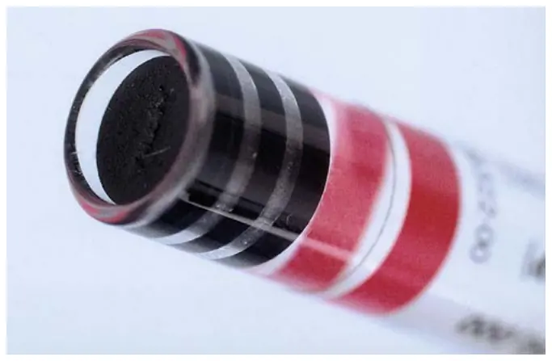

نسخه استخراجشده؛ ترجمه یا تأیید علمی انجام نشده است. وضعیت: captured
کارپولی از بلیستر درمیآوری و میبینی پیستون لاستیکی آن همسطح لبهی شیشه است، در حالی که در بقیهی کارپولهای همان بسته کمی فرورفته است. این کارپول را سوار میکنی؟

کارپول استوانهی شیشهای با حدود ۱٫۸ میلیلیتر محلول است؛ گنجایش خود شیشه حدود ۲ میلیلیتر است. برچسب بعضی کارپولها ۱٫۷ میلیلیتر مینویسد و در بعضی کشورها کارپول ۲٫۲ یا ۱ میلیلیتری هم هست؛ پس حجم را از برچسب بخوان. در محاسبههای دوز، هر کارپول را ۱٫۸ میلیلیتر بگیر.
سوزنی که درست سوار شود، دیافراگم را در مرکز و گرد سوراخ میکند و دور آن محکم بسته میشود. سوراخ بیضی و خارج از مرکز باعث نشت محلول به دهان بیمار میشود. چون دیافراگم نیمهتراواست، هر مایعی که کارپول در آن غوطهور بماند به درون محلول نفوذ میکند.
متیلپارابن، نگهدارندهی ضدباکتری، از کارپولها برداشته شد، چون کارپول تکمصرف است و پارابن حساسیت میداد؛ ولی هنوز در ویالهای چندبارمصرف هست.
میلیگرم دارو در هر کارپول = درصد × ۱۰ × ۱٫۸. پس ۲٪ یعنی ۳۶، ۳٪ یعنی ۵۴، ۴٪ یعنی ۷۲ و ۰٫۵٪ یعنی ۹ میلیگرم.
محلول دارای تنگکننده بسیار اسیدیتر (pH حدود ۳٫۵ تا ۴٫۵) از محلول ساده (حدود ۶٫۵) است؛ برای همین محلول ساده کمی زودتر اثر میکند و کمتر میسوزاند. بیسولفیت با گذر زمان اکسید و به بیسولفات تبدیل میشود که pH را باز هم پایینتر میبرد؛ پس کارپول کهنهتر بیشتر میسوزاند.
نکتهی طلایی: پیش از سوار کردن، تاریخ انقضا را ببین. کارپول تاریخگذشته را هرگز به کار نبر؛ هم تنگکنندهاش ضعیفتر شده و هم تزریقش بیشتر میسوزاند.